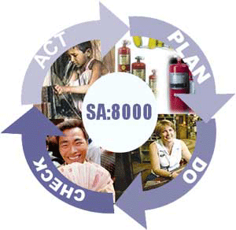

Social Compliance an overview:
Are You Ready for Social Compliance?
Whether you are large or
small manufacturer, a traditional retailer or a supplier/sub-contractor - social accountability is the order of
the day. Increasingly, the public and more importantly your consumer has become sensitive to how 'business houses'
demonstrate accountability for social compliance along their supply chain.
uyers who want to ensure social compliance in a company.
Almost all buyers located in US & Europe are
looking for social compliance because this again their local statutory and regulatory requirement. Walmart, K
mart, Disney, JC Penny are some famous & big groups that want to ensure social compliance before placing any
order. Companies from other part of glob like Zara Internatiuonal, IKEA have also started to ask for compliance
SA 8000 (Social Accountability)
We offer to our clients our effective and well devised consultancy services for meeting the social compliances.
Our team of experts assist our clients in devising strategies for overcoming the obstacles for achieving the SA
8000 certification standard. Some of the common requirements for achieving this SA 8000 certification needs are:
- Prevention of child labor
- Prevention of discrimination
- Freedom of association and right

Benefits of SA 8000
- Improved employee and employer relation
- Provides additional confidence for global sourcing
- Ensures a global social system approach in the supply chain
- Eliminates the need for multiple third party registrations.
- Provides a common platform to address worldwide social system requirements.
- Advantageous to the up gradation of existing quality systems.
- Social Policy and commitment.
WRAP (Worldwide Responsible Accredited Production)
Social Compliance an overview:
Are You Ready for Social Compliance?
Whether you are large or small manufacturer, a traditional retailer or a supplier/sub-contractor - social
accountability is the order of the day. Increasingly, the public and more importantly your consumer has become
sensitive to how 'business houses' demonstrate accountability for social compliance along their supply chain.
Buyers who want to ensure social compliance in a company.
Almost all buyers located in US & Europe are looking for social compliance because this again their local statutory
and regulatory requirement. Walmart, K mart, Disney, JC Penny are some famous & big groups that want to ensure
social compliance before placing any order. Companies from other part of glob like Zara Internatiuonal, IKEA have
also started to ask for compliance
SA 8000 (Social Accountability)
We offer to our clients our effective and well devised consultancy services for meeting the social compliances. Our
team of experts assist our clients in devising strategies for overcoming the obstacles for achieving the SA 8000
certification standard. Some of the common requirements for achieving this SA 8000 certification needs are:
Prevention of child labor
Prevention of discrimination
Freedom of association and right
Benefits of SA 8000
Improved employee and employer relation
Provides additional confidence for global sourcing.
Ensures a global social system approach in the supply chain
Eliminates the need for multiple third party registrations.
Provides a common platform to address worldwide social system requirements.
Advantageous to the up gradation of existing quality systems.
Social Policy and commitment.
WRAP (Worldwide Responsible Accredited Production)
Worldwide Responsible Apparel Production (WRAP) is a factory-based Certification Program for manufacturers of sewn
products, including apparel, footwear and accessories.
WRAP is an independent, non-profit organization
dedicated to the certification of lawful, humane and ethical manufacturing throughout the world. WRAP apparel
certification is now a requirement by most garment retailers in the U.S.
The market place, the media, and the
public increasingly demand that apparel be produced under conditions that respect the rights and comply with labor
and environmental laws, and that meet other international standards. A WRAP certification is widely accepted by
retailers, brand managers, licensers, as evidence that your facility is socially responsible.
The objective
of the Apparel Certification Program is to independently monitor and certify compliance with the following
standards, ensuring that a given factory produces sewn goods under lawful, humane, and ethical conditions. Note that
it is not enough to subscribe to these principles; WRAP monitors the factory for compliance with detailed practices
and procedures implied by adherence to these standards.
Compliance with Laws and Workplace Regulations
Manufacturers of Sewn Products will comply with laws and regulations in all locations where they conduct business.
Prohibition of Forced Labor - Manufacturers of Sewn Products will not use involuntary or forced labor --
indentured, bonded or otherwise.
Prohibition of Child Labor - Manufacturers of Sewn Products will not hire any employees under the age of 14,
or under the age interfering with compulsory schooling, or under the minimum age established by law, whichever is
greater.
Prohibition of Forced Labor - Manufacturers of Sewn Products will not use involuntary or forced labor --
indentured, bonded or otherwise.
Prohibition of Harassment or Abuse - Manufacturers of Sewn Products will provide a work environment free of
harassment, abuse or corporal punishment in any form.
Compensation and Benefits - Manufacturers of Sewn Products will pay at least the minimum total compensation
required by local law, including all mandated wages, allowances and benefits.
Hours of Work - Manufacturers of Sewn Products will comply with hours worked each day, and days worked each
week, shall not exceed the legal limitations of the countries in which sewn product is produced. Manufacturers of
sewn product will provide at least one day off in every seven-day period, except as required to meet urgent business
needs.
Prohibition of Discrimination - Manufacturers of Sewn Products will employ, pay, promote, and terminate
workers on the basis of their ability to do the job, rather than on the basis of personal characteristics or
beliefs.
Health and Safety - Manufacturers of Sewn Products will provide a safe and healthy work environment. Where
residential housing is provided for workers, apparel manufacturers will provide safe and healthy housing.
Freedom of Association & Collective Bargaining - Manufacturers of Sewn Products will recognize and respect
the right of employees to exercise their lawful rights of free association and collective bargaining.
Environment - Manufacturers of Sewn Products will comply with environmental rules, regulations and standards
applicable to their operations, and will observe environmentally conscious practices in all locations where they
operate.
Customs Compliance - Manufacturers of Sewn Products will comply with applicable customs law and, in
particular, will establish and maintain programs to comply with customs laws regarding illegal transshipment of
apparel products.
Security - Manufacturers of Sewn Products will maintain facility security procedures to guard against the
introduction of non-manifested cargo into outbound shipments (e.g. drugs, explosives, biohazards, and/or other
contraband).
Benefits of WRAP Certification
The WRAP Certification program is grounded in the belief that factory based certification is the most effective way
to ensure that work place comply with the WRAP Production Principles. The WRAP program places primary responsibility
for improving work place conditions on those who own and operate sewn product manufacturing facilities. WRAP
Certification Offers Market Advantage. Acceptance of WRAP Certificate by multiple brands and Retailers eliminates
duplication of monitoring efforts.
Who Controls WRAP?
U.S. Apparel association initiated idea, but from the time of its incorporation (2000), WRAP has been independent.
Who can apply for WRAP Certification?
All sewn product manufacturing facilities anywhere in the world, including direct sewn product production
facilities, independent sewn product manufacturing suppliers, licensees, and subcontractors. Gradually program is
covering other industries also.
Business Social Compliance Initiative (BSCI)
Business Social Compliance Initiative (BSCI) was founded in 2003 for the purpose of developing the tools and
procedures for the European Business Social Compliance Programs. Business Social Compliance Initiative (BSCI) is the
common European platform of retailers, industry and importing companies for monitoring and improving social
standards in supplier countries for all consumer goods. The BSCI is based on the labour standards of the
International Labour Organization (ILO) and other important international regulations like the UN Charter for Human
Rights, as well as on national regulations. The Business Social Compliance Initiative (BSCI) was officially launched
on 30
November 2004. It represents a coordinated effort by the European retail industry to
implement a harmonized code of conduct and improve working conditions in supplier countries on a voluntary basis.
The driving force behind the BSCI is the Brussels -based Foreign Trade Association (FTA), which is the association
for European commerce lobbying particularly on foreign trade issues.
What are the benefits of the BSCI?
The benefits of the BSCI as a broad and comprehensive monitoring system for social standards in the supply chain are
numerous:
Synergy effects, reduction of multiple auditing thereby reducing costs are one characteristic. Factories/companies
which are being audited can improve their competitiveness through improved social standards as better working
conditions and an improved management system leads to better product quality, higher productivity, fewer work
accidents, less sick leave producing more highly motivated workers and lower staff turnover. The result of this is
an improvement ethically, but also economically for both involved employers as well as employees. The economic
advantages in this respect - in parallel taking into account the objectives to reduce excessive overtime and raise
salaries where necessary, have been shown in research studies in this field. Therefore, benefits of the individual
company also have a positive effect on the broad public.
Does the BSCI provide a certification?
The BSCI is not a certification system and therefore does not issue a certificate. The BSCI provides a specific
process with uniform management instruments for Members, suppliers, auditors and qualifiers. This approach ensures
uniform audit procedures and evaluation and therefore comparability of the results.
If I do not get a certificate what do I receive as proof of the audit?
The cover page of the audit report outlining the results and the validity of the audit can be displayed in the
factory premises and be used as proof of the audit.
Which products are covered by the BSCI?
Audits within the BSCI can be conducted in any production facility worldwide.
The type of articles covered by the BSCI varies widely. There are quite a number of department stores as members,
who sell all sorts of soft goods, clothing, home textiles, small appliances, toys, and accessories. There are also
members that focus on one particular product group, for example clothing stores, shoe retailers, baby products, or
sports goods. For the implementation of the BSCI in the food industry, the BSCI has developed a special module for
the primary production (farms)
BSCI Social Requirements
- Management Practice.
- Documentation.
- Working Time.
- Remuneration.
- Child labour/Young Labour.
- Forced Labour/Discrepancy Measures/Prison Labour.
- Freedom of Association and Collective Bargain.
- No Discrimination.
- Working Conditions.
- Health and Social Facilities.
- Occupational Safety and Health.
- Dormitories.
- Environment.
BSCI Best Practices for Industry
The BSCI currently recognizes SA8000 as its best practice. Some points of crucial important are as follows
- Policy Establishment.
- Proper Planning and Implementation.
- Management Review.
- Control of Subcontractors/Suppliers/Sub-suppliers.
- Control of Home workers.
- Compensation.
- Child Labour.
- Evasion.
- Outside Communications.